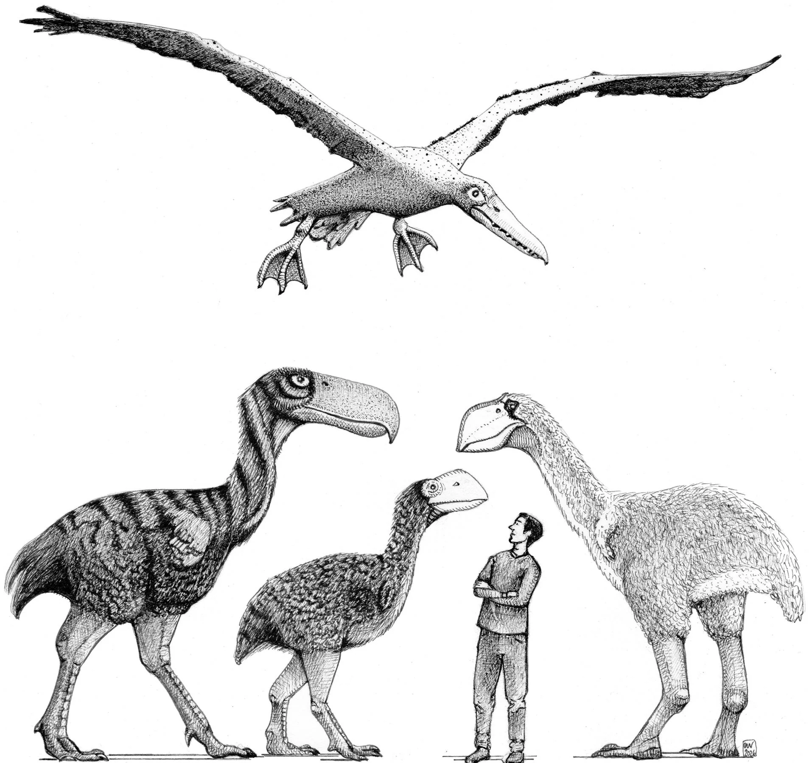
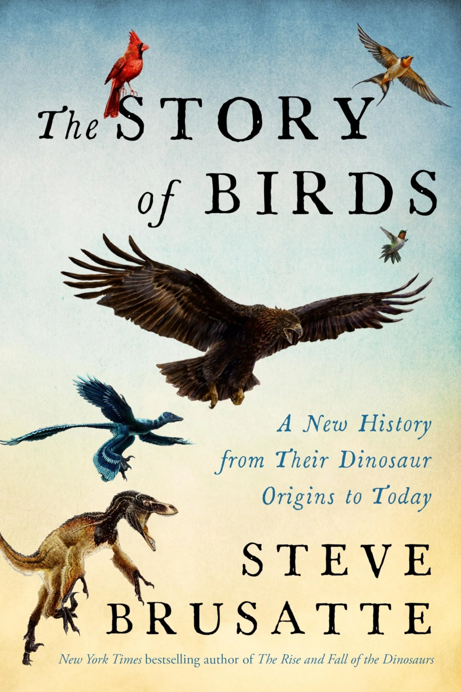
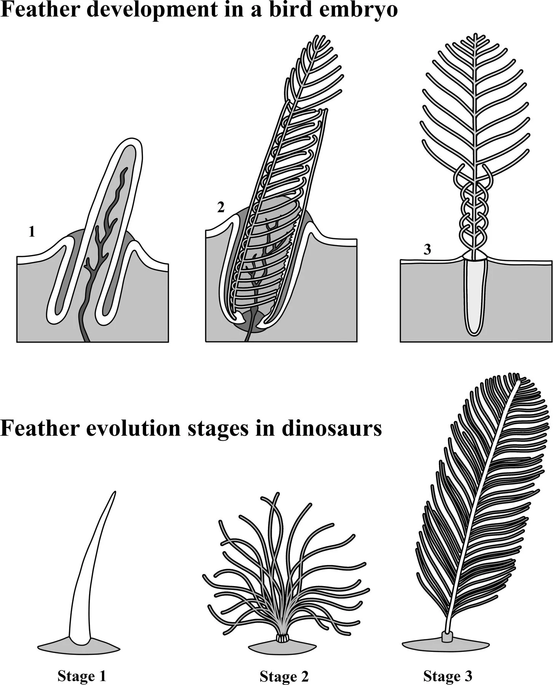
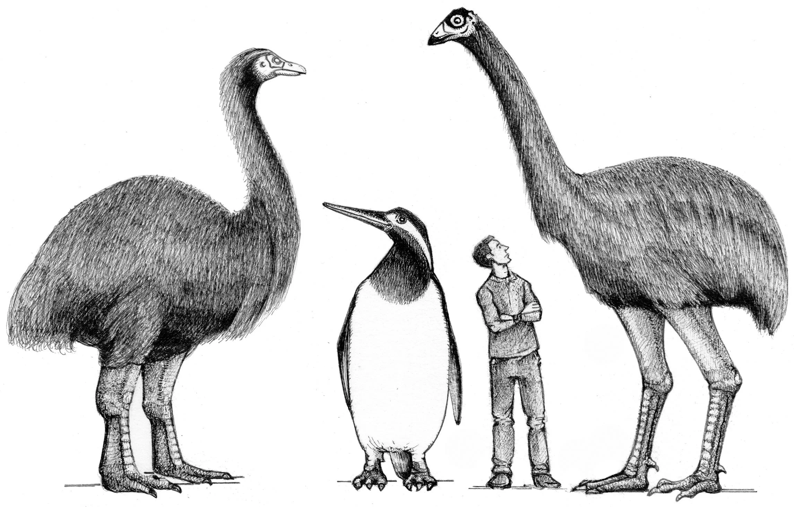

Book Review
Review: “The Story of Birds”
From pterodactyls to turkeys

Look out your window at a pigeon bobbing on the curb, a hummingbird hovering near a flower, or a crow dissecting a discarded sandwich wrapper. You are not simply observing a modern animal; you are gazing directly at a living dinosaur. Sixty-six million years ago, when a six-mile-wide asteroid smashed into Mexico and obliterated Tyrannosaurus rex, Triceratops, and three-quarters of all living species, the dynasty of dinosaurs did not come to an end. It merely shrank, sprouted beaks, and took flight.
In The Story of Birds: A New History, from Their Dinosaur Origins to the Present, paleontologist Steve Brusatte completes an ambitious evolutionary trilogy that began with The Rise and Fall of the Dinosaurs and continued through The Rise and Reign of the Mammals. With infectious enthusiasm, cinematic narrative drive, and firsthand dispatches from fossil digs across six continents, Brusatte dismantles centuries of popular misconception. Birds are not distinct descendants that broke away from dinosaurs; they are theropod dinosaurs themselves—the lone, magnificent branch of the family tree that outmaneuvered total extinction.
When we look at birds today, we see such utterly specialized, transformative creatures that it is tempting to view them as evolutionary miracles constructed all at once. In truth, almost every single feature that defines a bird—feathers, wings, hollow bones, warm blood, wishbones, and colored eggs—first evolved in ground-dwelling dinosaurs for entirely different reasons.
The Dinosaur Renaissance
The realization that birds are dinosaurs was not an overnight epiphany. In Victorian London, Thomas Henry Huxley—Darwin’s fiercest defender—spotted the striking anatomical parallels between the tiny Jurassic theropod Compsognathus and the primitive bird Archaeopteryx. Yet for most of the twentieth century, academic dogma relegated dinosaurs to slow, lumbering, cold-blooded evolutionary dead ends.
The paradigm shifted in the late 1960s when Yale paleontologist John Ostrom unearthed Deinonychus in Montana. This agile, pack-hunting predator possessed a swivel wrist identical to a bird’s flight joint, hollow bones, and an upright, high-energy stance. Ostrom boldly declared that birds were living theropods. Still, skeptics demanded proof: where were the feathers?

The definitive answer arrived in 1996 from the fossil-rich volcanic ash beds of Liaoning, northeastern China. Farmers and paleontologists began unearthing thousands of Mesozoic dinosaurs preserved in exquisite, Pompeii-like detail—not just their skeletons, but their soft tissues, stomach contents, and plumage. First came Sinosauropteryx, covered in a downy pelt of simple filaments (“dino-fuzz”). Soon after followed four-winged gliders like Microraptor, giant crested carnivores like Yutyrannus (a thirty-foot tyrannosaur draped in shaggy coats), and Zhenyuanlong, a raptor whose forelimbs bore full, aerodynamic flight feathers despite being far too heavy to fly.
Feathers Before Flight
One of Brusatte’s central themes is evolutionary exaptation: complex anatomical features rarely evolve for the purpose they ultimately serve. Feathers did not evolve for flight. For tens of millions of years, predatory dinosaurs wore primitive plumage for thermoregulation—insulating their hyperactive, warm-blooded bodies against the cold—and for elaborate sexual display.
By using scanning electron microscopes to examine fossilized melanosomes (the microscopic pigment packages preserved in rock), paleontologists can now map the true colors of dinosaurs. Sinosauropteryx sported a bandit-mask across its eyes and a vibrant, chestnut-orange-and-white striped tail; Microraptor glistened with an iridescent, raven-black sheen; Anchiornis boasted a magnificent reddish-brown crest and speckled black-and-white wings.

As Brusatte illustrates, the developmental pathway of feathers inside a modern bird egg directly recapitulates their deep-time evolutionary history. Simple hollow quills evolved first, followed by downy tufts, symmetrical branching pennaceous feathers, and finally the stiff, asymmetrical airfoils capable of generating aerodynamic lift.
The Jurassic Aviators
The transition from ground-bound predator to powered aviator crystallized during the Late Jurassic, immortalized in the 150-million-year-old limestone lagoons of Solnhofen, Germany. The iconic Berlin specimen of Archaeopteryx—which Brusatte reverently describes as “the Mona Lisa of paleontology”—captured this halfway house: a dinosaur jaw full of sharp teeth, a long bony tail, and three clawed fingers on each wing, combined with broad feathered wings and an avian wishbone.
Yet flight was not a sudden miracle; it was an unruly playground of biomechanical experimentation. In the Jurassic and Early Cretaceous, numerous distinct dinosaur lineages launched into the air. Scansoriopterygids like Yi qi glided on membranous bat-like skin wings supported by an unusual rod of wrist cartilage. Dromaeosaurs like Microraptor used four feathered wings to parachute and glide between trees. But the true masters of the Mesozoic canopies were the Enantiornithes, or “opposite birds.”
For more than eighty million years, opposite birds dominated the Mesozoic skies. They filled every conceivable niche: kingfisher-like plunge divers, sap-eating woodpecker analogs, shorebirds, and hawk-like predators. Yet on a single catastrophic day, every single one of them was wiped from the face of the Earth.
The Asteroid and the Seed-Eaters
Why did some birds survive the Chicxulub asteroid impact 66 million years ago while all other dinosaurs—including the dominant opposite birds—perished? Brusatte’s breakdown of this evolutionary bottleneck is one of the book’s most compelling chapters.
When the six-mile bolide slammed into the Yucatán Peninsula, it triggered a global nuclear winter. Shockwaves and firestorms ignited global forests, followed by a dense veil of soot and dust that choked off sunlight for years. Photosynthesis collapsed; food chains unraveled from the base up. Animals that depended on living leaves, fruit, or fresh meat starved.

The ancestors of modern birds (Neornithes, or crown birds), such as the newly discovered 66.7-million-year-old “Wonderchicken” (Asteriornis maastrichtensis) found in a Belgian limestone quarry by Daniel Field, possessed a crucial suite of survival traits:
- Toothless Keratinous Beaks & Robust Gizzards: While opposite birds relied on teeth to catch insects or fish, crown birds had evolved hard beaks and muscular gizzards capable of grinding dormant seeds and subterranean nuts. When the world burned, the global seed bank buried in the soil provided an enduring pantry.
- Ground-Dwelling Habits: Opposite birds were obligate arboreal tree-dwellers. When the world's forests incinerated, their habitat vanished overnight. Crown-group survivors were shorebird- and waterfowl-like ground foragers that could shelter in burrows, wetlands, or rock crevices.
- Hyper-Accelerated Growth: Modern birds hatch and reach mature adult size in weeks or months, compared to the multi-year developmental schedules of larger dinosaurs and enantiornithines, allowing rapid population recovery.
When Dinosaurs Reclaimed the Land
With the non-avian dinosaurs gone and mammalian competitors initially tiny and nocturnal, the surviving birds underwent an explosive adaptive radiation during the Paleocene and Eocene epochs. In many isolated corners of the globe, birds cast off flight altogether, grew to gargantuan proportions, and reclaimed their ancestral position as apex land predators.
Brusatte revels in detailing these Cenozoic leviathans: the ferocious Terror Birds (Phorusrhacidae) of South America, standing eight feet tall with hooked beaks the size of horse skulls that delivered lethal downward axe-blows; the Demon Ducks of Doom (Dromornithidae) of Australia, hulking flightless herbivores weighing over a thousand pounds; the nine-foot Moas of New Zealand, preyed upon by the colossal Haast’s eagle; the half-ton Elephant Birds of Madagascar, which laid eggs large enough to hold two gallons of liquid; and the bony-toothed Pelagornithids, oceanic wanderers with twenty-foot wingspans that soared over prehistoric oceans like living gliders.
Avian Brainpower & The Anthropocene Crisis
In the final act, Brusatte turns to the neurology, cognition, and modern plight of living birds. The old slur “bird brain” has been completely overturned by modern neuroanatomy. While mammal brains achieved high neuron counts by expanding cortex volume, bird brains evolved ultra-compact architectures, cramming twice to three times as many neurons per gram of brain tissue into their forebrains. A raven or parrot packs as many forebrain neurons as a capuchin monkey, enabling tool manufacture, recursive causal reasoning, facial recognition, and complex vocal syntax.
Yet this 150-million-year triumph now faces its steepest hurdle: humanity. A landmark 2019 survey revealed that North America alone has lost over 3 billion breeding wild birds since 1970—a staggering 29% decline driven by habitat fragmentation, glass window collisions, agricultural pesticides, climate shifts, and feral cats.
Meanwhile, humans have engineered a bizarre evolutionary monopoly: the domestic broiler chicken (Gallus gallus domesticus). Descended from the wild red junglefowl of Southeast Asian bamboo forests, there are now over 33 billion chickens alive at any given moment—outnumbering all wild birds on Earth combined. Their chemically modified, rapid-growth bones will form the defining geological marker of the Anthropocene in future fossil beds.
Dinosaurs survived an asteroid that cracked the planet’s crust, darkened the sun, and incinerated the biosphere. Whether they can survive our current planetary reshaping remains the defining question of their deep-time story.
Written with infectious energy, rigorous scientific clarity, and genuine wonder, The Story of Birds is an extraordinary achievement. Brusatte bridges deep time with our everyday backyards, reminding us that whenever we listen to a robin’s morning song, we are listening to the triumphant, unbroken music of the dinosaurs.
About the author
Steve Brusatte, PhD, is an American paleontologist and Professor of Paleontology and Evolution at the University of Edinburgh in Scotland. He is the author of the international bestsellers The Rise and Fall of the Dinosaurs and The Rise and Reign of the Mammals. He served as the paleontology advisor for the Jurassic World film franchise and has named more than fifteen new prehistoric species, including the tyrannosaur Qianzhousaurus (“Pinocchio rex”) and the feathered raptor Zhenyuanlong.